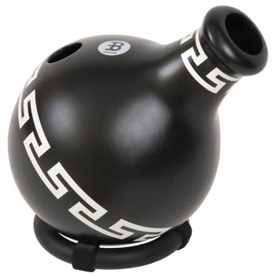
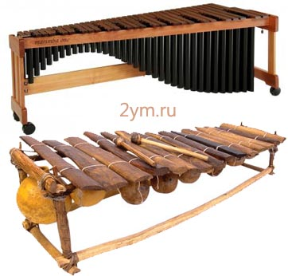
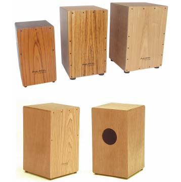
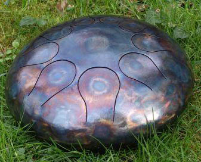

Необычные музыкальные инструменты
Ибо Барабаны – одна из видов глиняных инструментов, относится к группе глиняных инструментов с названием Уду.
Другими разновидностями Уду являются: Утар, Тамбута, Ким-Ким,
Мбвата, Клейтон.
Играют на Ибо барабанах путем ритмического закрывания бокового
отверстия кувшина ладонью и ударов пальцами по корпусу.
Инструмент издает глубокий басовый звук, с перкуссионным
звучанием самого горшка. Для изменения высоты извлекаемого
тона, в них наливают воду. Изготовляются барабаны из
обожженной глины.
Маримба – необычный
ударный музыкальный инструмент, состоящий из деревянных
брусков, по которым ударяют колотушками. На маримбе играют
специальными палочками.
Пластины
инструмента традиционно изготавливают из тыквы, а в
современности из натуральной древесины розового гондурасского
дерева или палисандра.
Резонатором являются металлические или деревянные трубки
разной длинны и диаметра, подвешенные вертикально под
клавишей, возможно использование бамбука. Стоимость
профессиональной маримбы от 200 тыс. рублей, она имеет большой
вес 74кг, и размеры: ширина 78см, высота 115 см. Поэтому,
любителям, можно спокойно изготовить данный инструмент
самостоятельно.
Кахон - представляет
собой деревянную коробку аля скворечник, с металлическими
струнами внутри. Кахон (исп. Cajón — коробка, ящик) — ударный
музыкальный инструмент родом из Перу. Представляет собой
коробку, выполненную из дерева или других материалов.
Является
ударным музыкальным инструментом с широким диапазоном звуков
от глубоких басов до дребезжащих звуков.
Хэпи, Танк драм (hapi drum, tank drum) – перкуссионный инструмент состоящий из двух металлических сегментов, соединенных между собой, с прорезями под язычки (клавиши). Каждый язычок музыкального инструмента настроен на свою ноту. Играют на них пальцами, положив инструмент на колени. На википедии известен под названием глюкофон.